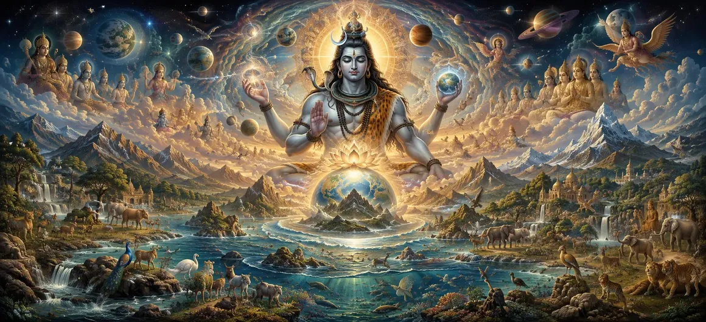

The Description of Creation — Part 2
In Chapter 11 of the Vayaviya Samhita, Lord Vayu continues the exposition of cosmic creation, detailing the diversification of worlds, species, and living orders under the supreme will of Lord Shiva.
This second part explores how gross physical forms, planetary systems, and various classes of living beings populate the universal sphere.
Seekers gain deeper insight into the expansive architecture of life generated by divine grace.
Chapter 11 Comprehensive Highlights
Planetary Expansion
Unveiling the formation of diverse worlds and spheres.
Diversification of Life
Tracing the emergence of various living species.
Cosmic Hierarchy
Examining the structured orders inhabiting the cosmos.
Shiva’s Vitality
Understanding Supreme Shiva as the life-giver of all forms.
Gross Elements Integration
The combination of gross elements into tangible environments.
Gateway to Part 3
Preparing the seeker for further creation narratives in Chapter 12.
Core Topics in This Chapter
- 01Continuation of Universal Manifestation→
- 02Combination of Gross Elements (Panchikarana)→
- 03Formation of Planetary Spheres and Lokas→
- 04Emergence of Diverse Living Species→
- 05Classification of Created Beings and Orders→
- 06Role of Cosmic Progenitors (Prajapatis)→
- 07Infusion of Conscious Vitality by Shiva→
- 08Establishing Ecological and Cosmic Balance→
- 09Cultivating Reverence for All Living Forms→
- 10Transition to the Description of Creation — Part 3→
Continuation of Universal Manifestation
Lord Vayu elaborates on how the initial cosmic framework expands into tangible, populated realms under divine direction.
This phase transitions from abstract principles into concrete planetary systems.
Combination of Gross Elements (Panchikarana)
The five gross elements intertwine in precise proportions to form the material basis of all physical objects.
This intricate combination allows the universe to support tangible forms and sensory experiences.
Formation of Planetary Spheres and Lokas
The text outlines the creation of various celestial abodes and worlds, each designed to accommodate different levels of consciousness.
Higher and lower planes emerge in harmonious order.
Emergence of Diverse Living Species
Life blooms in myriad forms—aquatic creatures, plants, insects, birds, animals, and human beings.
Every species is endowed with innate instincts and faculties suited to its environment.
Classification of Created Beings and Orders
Beings are categorized based on their evolutionary grade and modes of birth, establishing an orderly hierarchy of life.
This classification aids souls in progressing spiritually across lifetimes.
Role of Cosmic Progenitors (Prajapatis)
Lord Vayu explains how empowered progenitors are appointed to propagate populations and oversee specific branches of creation.
Their actions execute the divine will of Supreme Shiva.
Infusion of Conscious Vitality by Shiva
Regardless of how complex biological structures become, life animates them solely through the indwelling presence of Supreme Shiva.
He is the ultimate Prana sustaining every heartbeat in the cosmos.
Establishing Ecological and Cosmic Balance
The unfolding of creation incorporates self-sustaining laws that maintain ecological harmony and mutual dependence among species.
Nothing exists in isolation; all creation forms a unified divine tapestry.
Cultivating Reverence for All Living Forms
Recognizing the divine origin of all species inspires devotees to treat nature and living beings with deep respect and compassion.
Compassion becomes a natural expression of spiritual understanding.
Transition to the Description of Creation — Part 3
Concluding Part 2, Lord Vayu prepares the audience for the next stage of creation details in Part 3.
Extended Key Teachings of Chapter 11
Planetary Realms
Expansion of lokas and celestial abodes.
Species Variety
Emergence of diverse life forms and biological orders.
Prajapatis' Role
Progenitors executing Shiva's creative intent.
Divine Vitality
Shiva animates every living creature.
Panchikarana
Combining gross elements into material reality.
Gateway to Chapter 12
Prepares the seeker for the continuation in Part 3.
Expanded Spiritual Reflection
When we witness the incredible diversity of life on Earth and across the cosmos, we see the boundless creativity of Supreme Shiva. Every species, forest, ocean, and mountain is an expression of His divine presence, reminding us to honor and protect the sacred web of life.
Living the Message of Chapter 11
Cultivate deep empathy for all living creatures, recognizing the same divine consciousness dwelling within them.
Live in harmony with nature, honoring the ecological balance designed by Supreme Shiva.
Express gratitude daily for the precious gift of life and the divine support sustaining it.
Detailed Key Spiritual Concepts
The intricate compounding of gross elements.
The creation and distribution of planetary spheres.
The manifestation of diverse biological species.
The execution of population expansion by progenitors.
The infusion of conscious vitality into all forms.
The interconnected harmony of universal existence.
Exhaustive Chapter Summary
Vayaviya Samhita Chapter 11 ('The Description of Creation — Part 2') continues the narrative of cosmic manifestation by detailing the combination of gross elements (Panchikarana), the formation of planetary spheres (Lokas), and the emergence of diverse biological species under the supreme will of Lord Shiva. This second part emphasizes the vitality infusing all life and prepares the seeker for Part 3 in Chapter 12.
Frequently Asked Questions
1. What is the primary theme of Vayaviya Samhita Chapter 11 ('The Description of Creation — Part 2')?
The chapter continues the detailed narrative of cosmic manifestation, focusing on the emergence of diverse species, planetary spheres, and biological life under Lord Shiva.
2. How does the creation of life progress in this part?
It progresses through the unfolding of various living orders, beings, and cosmic categories that populate the universal egg (Brahmanda).
3. What role do divine forces play in the diversification of species?
Divine forces act under Shiva's command to diversify life forms, ensuring that every soul finds an appropriate vehicle for spiritual evolution.
4. How is Supreme Shiva connected to this second phase of creation?
Supreme Shiva remains the foundational source and supreme controller who infuses every manifested form with conscious vitality.
5. Why is understanding the variety of creation important for devotees?
It inspires reverence for all life forms and deepens the realization of the interconnected web of existence rooted in the Divine.
6. What is the next chapter for navigation after this chapter?
The next chapter for navigation is 'The Description of Creation — Part 3'.
“As gross elements weave together under Shiva's command, countless worlds and living species awaken into vibrant being, reflecting His infinite grace.”
Continue Through Vayaviya Samhita
Chapter 11 concludes. Continue to the next chapter, The Description of Creation — Part 3.